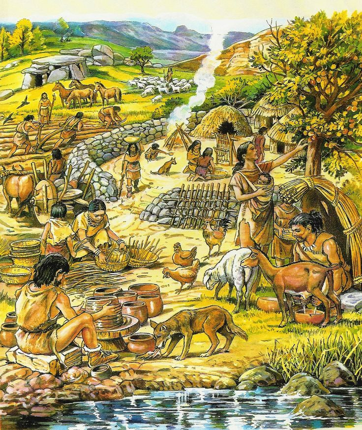

Neolithicum
Van jagers naar boeren
Inleiding
Onze voorouders leefde meer dan 2 miljoen jaar van jacht, visvangst, het vinden van aas en het verzamelen van vruchten en planten. Maar als we kijken naar hoe we nu leven heeft er op een gegeven moment een verandering plaatsgevonden moeten hebben. En die was er. Die staat bekend als de neolithische revolutie of ook wel bekend als het neolithicum. Maar wat is het neolithicum precies en hoe stak het in één?
Klik hier om meer te lezen! →
